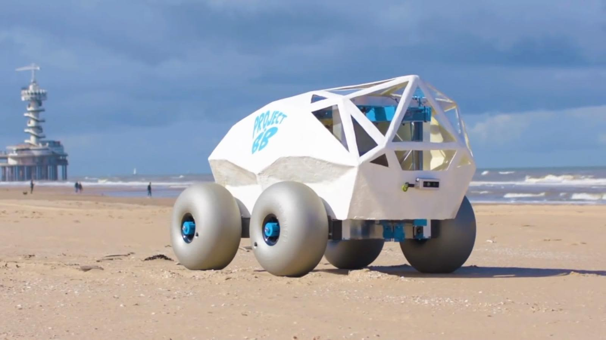

Visión General
En la era de la transformación digital, la inteligencia artificial (IA) se ha consolidado como el motor principal detrás de los avances tecnológicos más revolucionarios de nuestro tiempo. Su capacidad para analizar vastos volúmenes de datos, automatizar procesos complejos y ofrecer soluciones innovadoras está redefiniendo las bases de las industrias, la sociedad y la forma en que interactuamos con la tecnología (Russell & Norvig, 2021). Cada año, el campo de la IA nos sorprende con proyectos que no solo inspiran por su creatividad y alcance, sino que también plantean nuevas posibilidades para el futuro.
En esta página, hemos reunido los 8 proyectos de inteligencia artificial más importantes del año 2021, seleccionados no solo por su impacto técnico, sino también por su relevancia social, económica y ética. Estos proyectos abarcan una diversidad de áreas, desde avances en el diagnóstico médico y la sostenibilidad medioambiental, hasta innovaciones en el sector energético, la logística y las relaciones humanas (Goodfellow, Bengio & Courville, 2016). Cada uno de ellos representa un testimonio del ingenio humano y la capacidad de la tecnología para abordar los mayores desafíos de nuestro mundo.
Entre estos proyectos encontrarás propuestas que están transformando la atención médica mediante diagnósticos más precisos y accesibles, impulsando la transición hacia energías más limpias y sostenibles, optimizando cadenas de suministro y revolucionando el comercio electrónico con personalización avanzada (Marr, 2020). También destacamos iniciativas que abordan temas de gran interés como la ética en la toma de decisiones automatizadas, la inclusión tecnológica y la protección de los datos personales. Este equilibrio entre innovación y responsabilidad marca el camino hacia un futuro donde la IA no solo sea sinónimo de progreso, sino también de beneficio colectivo.
Cada uno de estos 8 proyectos cuenta una historia: la historia de cómo equipos multidisciplinarios, con pasión por resolver problemas complejos, han utilizado el potencial de la IA para crear herramientas que empoderan a las personas y mejoran nuestra calidad de vida (Tegmark, 2017). Al explorar estas iniciativas, podrás apreciar cómo la inteligencia artificial está moldeando un futuro lleno de oportunidades, superando barreras y convirtiéndose en una aliada clave para enfrentar los retos globales.
Te invitamos a sumergirte en este recorrido y descubrir los avances que están cambiando el mundo tal y como lo conocemos. Desde innovaciones tecnológicas hasta reflexiones sobre su impacto ético y social, estos proyectos nos recuerdan que el verdadero poder de la inteligencia artificial reside en su capacidad para construir un mundo más inteligente, inclusivo y sostenible.
Los 8 proyectos de Inteligencia Artificial más importantes del año 2021
-
La primera solución de inteligencia artificial equivalente a un cerebro humano
La evolución y el progreso de la inteligencia artificial ya es imparable. El nuevo sistema de inteligencia artificial desarrollado por la empresa estadounidense Cerebras Systems nos demuestra, una vez más, que el potencial está aún por descubrir.
La compañía ha anunciado el desarrollo de un sistema basado en IA de entrenamiento de modelos y dispositivos que puede gestionar la misma cantidad de parámetros que un cerebro humano, cosa que marca un antes y un después en la historia de la inteligencia artificial.
El cerebro humano cuenta con alrededor de 100 billones de conexiones neuronales que procesan información y nos otorgan la capacidad de aprender cosas nuevas. Hasta el momento, la mayoría de sistemas de inteligencia artificial disponen alrededor del 1% de capacidad de procesamiento del cerebro humano.
Cerebras Systems está creando un sistema computacional basado en inteligencia artificial que será capaz de gestionar hasta 120 billones de parámetros, lo que incluso llega a superar la capacidad del cerebro humano.
-
Hospital del Mar predice la evolución de los pacientes ingresados por Covid-19
En momentos de crisis sociosanitarias como la que vivimos, la inteligencia artificial puede ser de gran ayuda. Una iniciativa de Hospital del Mar —en colaboración con el laboratorio Ferrer y Bismart— es la prueba de ello.
Durante la etapa más dura de la pandemia, el equipo de investigación del Hospital del Mar de Barcelona decidió emprender un proyecto innovador que aprovecha la folksonomía —rama de la inteligencia artificial— para analizar y detectar características comunes en pacientes de COVID-19.
El proyecto surge de la aplicación de Bismart Folksonomy, una solución de IA basada en natural language processing, mediante la cual el equipo del Hospital del Mar ha podido identificar características comunes entre los pacientes de Covid-19 e identificar patrones sobre el comportamiento del virus sin necesidad de dedicar una gran cantidad de horas de trabajo a la recopilación y el análisis de datos.
-
Un algoritmo que consigue resolver entrelazados complejos por si solo
El mes de septiembre de 2021, el físico cuántico Mario Krenn creó un nuevo grupo de investigación en el Instituto Max Planck para la Ciencia de la Luz, en Alemania. El objetivo del nuevo grupo era aprovechar los algoritmos de inteligencia artificial para experimentos de física cuántica.
El equipo de investigadores comenzó a desarrollar el primer algoritmo de IA que permitiría sustraer los núcleos conceptuales de las soluciones a problemas científicos muy complejos.
No fue la primera vez que lo intentó. En 2016, Krenn creó un algoritmo de IA llamado Melvin, que era capaz de generar estados entrelazados de alta complejidad involucrando a múltiples fotones. La gran gesta de Melvin fue que logró desarrollar esos estados sin que nadie le hubiera dado las instrucciones necesarias para hacerlo.
Posteriormente, Krenn desarrolló una versión mejorada de Melvin. El nuevo algoritmo de deep learning, llamado Theseus, superó la potencia de Melvin y prometió convertirse en la estrella del nuevo grupo de investigación del Instituto Max Planck.
-
Inteligencia artificial en el proceso de vacunación contra el Covid-19
La campaña masiva de vacunación contra el Covid-19 fue, sin duda, el proyecto sociosanitario mundial de mayor envergadura y relevancia en su momento.
El suministro y distribución de las vacunas conllevó un esfuerzo logístico y de producción que tuvo que realizarse en tiempos récord sin comprometer la calidad del material administrado.
La empresa italiana Stevanato Group se convirtió en una de las principales suministradoras de viales y jeringas para la vacunación contra el Covid-19 a nivel mundial. Asimismo, la compañía también produjo equipos de inspección de vacunas y componentes de plástico utilizados en los kits de detección del virus.
Con el objetivo de mejorar la eficacia de su cadena de suministro sin arriesgar la calidad del proceso, la organización recurrió a la inteligencia artificial, el cloud computing y la realidad mixta. Concretamente, la compañía utilizó Microsoft 365 y Microsoft Teams como sistemas de colaboración y coordinación entre los distintos equipos de trabajo, lo que redujo la cantidad de interrupciones en la cadena de suministro.
Además, la empresa aprovechó el machine learning para optimizar su estrategia de datos mediante queries a gran escala y análisis de datos automatizado, lo que le permitió mejorar la eficiencia y la velocidad de sus pruebas de calidad.
-
Por una playa sin colillas
El cambio climático es uno de los temas que más preocupan a la opinión pública mundial en estos momentos. Según las últimas cifras de National Geographic, cada año se tiran más de 5 billones de colillas en entornos naturales. Las playas son uno de los ecosistemas más afectados por este fenómeno, ya que las colillas contienen más de 30 sustancias tóxicas que, al entrar en contacto con el agua, se disuelven contaminando el hábitat.
Para reducir el impacto medioambiental de las colillas en las playas, Edwin Bos y Martijn Lukaart, ambos trabajadores de la consultora TechTIcs, han creado BeachBot.
BeachBot es un robot que detecta y recoge las colillas de la arena mediante algoritmos de inteligencia artificial. La gran proeza del robot es que es capaz de identificar incluso las colillas que están enterradas en la arena. El robot detecta los desechos a través de diversas cámaras, los recoge y los guarda en su interior para posteriormente lanzarlos a la basura.
La iniciativa también se beneficia de la colaboración ciudadana, ya que TechTIcs ha habilitado un sistema a través del cual cualquier persona puede enviar fotografías de desechos encontrados en la playa para ayudar a BeachBot a acabar con la contaminación marina.
-
El algoritmo que mejora los dispositivos de estimulación cerebral
La inteligencia artificial se está convirtiendo en una tecnología fundamental para la investigación médica y los casos de éxito de su aplicación para la resolución de problemas científicos relacionados con la sanidad aumentan año tras año.
En 2021 el equipo de investigadores de Google Research y Mayo Clinic han desarrollado un nuevo algoritmo de IA llamado 'identificación de la curva del perfil base' para optimizar la atención de los pacientes con trastornos del movimiento y la epilepsia que requieren de dispositivos de estimulación eléctrica cerebral.
La estimulación cerebral a partir de descargas eléctricas ayuda a los investigadores a estudiar el comportamiento de las conexiones cerebrales de estos pacientes, midiendo las respuestas de tensión en las zonas afectadas y comparándolas con zonas no afectadas. Sin embargo, según los investigadores de Mayo Clinic, analizar la interacción de las redes cerebrales es un proceso muy complicado, ya que las señales que se registran son complejas y las mediciones que se pueden realizar son limitadas.
Con el nuevo algoritmo de inteligencia artificial los investigadores de Mayo Clinic han logrado simplificar las comparaciones entre los efectos de la estimulación eléctrica en el cerebro. Mediante el algoritmo, los científicos pueden descubrir qué regiones del cerebro interactúan entre sí y optimizar el emplazamiento de electrodos para los dispositivos de estimulación eléctrica.
-
Przewalski, el caballo en peligro de extinción
Hungría es el escenario de otro ejemplo de aplicación de la inteligencia artificial para paliar los efectos de la contaminación del ecosistema y el cambio climático. El país, repleto de inmensas praderas y llanuras, es hábitat de varias especies de animales en peligro de extinción. Entre ellas, el caballo de Prezwalski es una de las más amenazadas. Solo quedan alrededor de 2.000 ejemplares de esta especie alrededor del mundo, 300 de los cuales se encuentran en Hungría.
La Reserva de la Biosfera del Parque Nacional de Hortobágy lucha para hacer frente a la extinción de la especie a través de la cría de caballos en el entorno natural. Cuando han crecido y están preparados, los caballos se desplazan a su hábitat natural, Mongolia.
El Parque Nacional de Hortobágy junto con la Facultad de Ciencia y Tecnología y el Departamento de Zoología Evolutiva de la Universidad de Debrecen, están aplicando la tecnología de Microsoft para estudiar los ejemplares de caballos Przewalski. La especie convive con otras especies de caballos, por lo que, identificarlos y poder contabilizarlos no resulta fácil.
Ahora los investigadores están usando drones para observar a los animales sin molestarlos y recopilar imágenes en alta resolución que son analizadas mediante el análisis automático de imágenes de Microsoft. La universidad de Debrecen está entrenando el algoritmo de inteligencia artificial para optimizar la precisión de la identificación con el objetivo de que los científicos puedan observar al animal en tiempo real sin tener que recurrir a la intervención física.
-
Salvando a las tortugas marinas
Las lluvias torrenciales —en este caso, lluvias monzónicas— visitan el norte tropical de Australia cada fin de año. Los chaparrones transforman el paisaje, produciendo inundaciones y el aislamiento de múltiples extensiones de terreno. Este fenómeno reduce enormemente las posibilidades de supervivencia de las tortugas en peligro de extinción que habitan en la costa occidental de Cabo York.
CSIRO, el equipo de guardas forestales de Aak Puul Ngantam (APN), ha iniciado un proyecto colaborativo con el Programa Nacional de Ciencias Medioambientales (NESP) de Australia que aprovecha la tecnología Microsoft para salvar a las tortugas marinas en peligro de extinción.
La tecnología empleada consiste en un sistema cloud que aprovecha la inteligencia artificial para analizar automáticamente miles de fotografías aéreas de las costas del norte de Australia para la detección de nidos de tortuga. Así, los guardas forestales pueden identificar rápidamente los ejemplares de crías en peligro de extinción, incluso en áreas remotas y aisladas y salvarlas de sus depredadores.
Referencias
- Bismart. (2021). 8 proyectos de inteligencia artificial (IA) más importantes del 2021. Recuperado de https://blog.bismart.com/8-proyectos-de-inteligencia-artificial-ia-mas-importantes-2021
- Goodfellow, I., Bengio, Y., & Courville, A. (2016). Deep Learning. MIT Press.
- Marr, B. (2020). Artificial Intelligence in Practice: How 50 Successful Companies Used AI and Machine Learning to Solve Problems. Wiley.
- Russell, S., & Norvig, P. (2021). Artificial Intelligence: A Modern Approach. Pearson.
- Tegmark, M. (2017). Life 3.0: Being Human in the Age of Artificial Intelligence. Penguin Books.